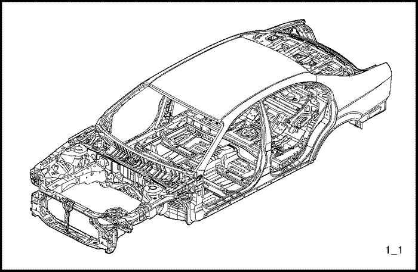
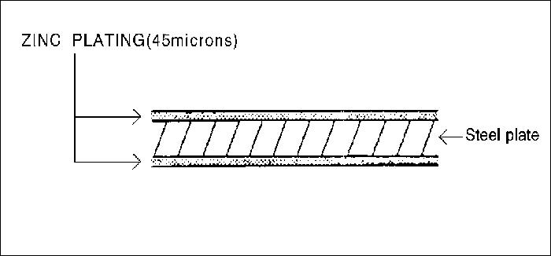

INFORMACIÓN GENERAL
INSTRUCCIONES GENERALES
Esta publicación está destinada a ayudar al chapista en su trabajo especializado. Con el transcurso de los años, el trabajo de chapistería ha evolucionado mucho. A medida que se han desarrollado técnicamente los vehículos, el trabajo de reparación de carrocerías también ha tenido que satisfacer nuevos requerimientos de los cambios de diseño para conciliar demandas aparentemente contradictorias como por ejemplo, por mencionar unas pocas:
- resistencia y seguridad; poco peso
- amplitud de espacio ; buena aerodinámica
- calidad alta ; precio bajo
La durabilidad y la facilidad con que se realice el trabajo de reparación de la carrocería también juega un papel importante.
En la actualidad, el uso de equipos de producción altamente automatizados hace que sea posible mantener las más estrictas tolerancias y, de esa forma, garantizar un alto nivel de calidad.
Cuando la carrocería sufre daño, el cliente, con razón, espera que sea reparada por expertos que le devuelvan los mismos parámetros de calidad.
Al mismo tiempo, por su seguridad, el cliente espera que usted tenga un buen conocimiento sobre los materiales, métodos de medición y reparación, posible distorsión, tratamiento óptimo para evitar la corrosión y muchas otras cosas.
Esta publicación está destinada a ayudarle a actualizar sus conocimientos y a darle una idea de qué es lo que necesita para reparar daños moderados o graves producidos por accidentes, para su propia seguridad y para la satisfacción de sus clientes.
AVISO DE SEGURIDAD IMPORTANTE
ANTES DE COMENZAR A TRABAJAR
- Desconecte la batería para reducir la posibilidad de incendios a causa de cortocircuitos eléctricos.
- Compruebe si hay fugas de combustible y haga las reparaciones necesarias.
- Desmonte el depósito de combustible y/o tuberías de combustible si se van a utilizar equipos de soldar cerca del sistema de alimentación de combustible.
- Antes de comenzar a soldar, lijar o cortar, proteja las alfombras y asientos con forros protectores a prueba de fuego.
- Cumpla las normas de seguridad estándar cuando utilice líquidos tóxicos o inflamables.
- Use medios de protección estándar cuando vaya a pintar, soldar, cortar, lijar o esmerilar. Los medios de protección estándar incluyen:
- Máscaras o filtros de respiración: diseñados para filtrar gases tóxicos, nebulizaciones, polvo y otras partículas transportadas por el aire. Use una máscara o filtro de respiración diseñado para protegerse contra los peligros específicos de este trabajo en particular, por ejemplo, algunas máscaras de respiración están diseñadas para filtrar sólo polvo y partículas transportadas por el aire, pero no gases tóxicos.
- Gafas de seguridad abiertas o cerradas: diseñadas para proteger sus ojos contra partículas metálicas, partículas de polvo o salpicaduras de líquidos.
- Guantes: Los guantes de goma protegen contra los productos químicos corrosivos. Los guantes para soldar protegen contra quemaduras y abrasiones provocadas al soldar, lijar o esmerilar.
- Zapatos de seguridad: Las suelas antideslizantes protegen contra los resbalones. Las puntas de acero protegen contra los objetos que puedan caer sobre el pie.
- Auriculares antirruido: protegen los tímpanos contra los niveles de ruido dañinos.
DURANTE EL TRABAJO
- No fume mientras esté trabajando cerca del sistema de alimentación de combustible.
- Coloque los trapos de taller impregnados con gas o disolventes, en un recipiente apropiado.
- No utilice la manguera de aire para limpiar los conjuntos de freno; utilice sólo una aspiradora aprobada para este fin y use una máscara o filtro de respiración.
- Amarre siempre un cable de seguridad cuando esté utilizando un pistón hidráulico o una bancada para enderezar bastidores; no se pare en línea directa con las cadenas que se utilizan en dichos equipos.
SEGURIDAD DE LA CARROCERÍA
Las carrocerías modernas de chapa pretensada están diseñadas de forma que tengan un habitáculo robusto protegido por zonas de impacto delantera y trasera.
- Las zonas de impacto están diseñadas para que, en caso de accidente, conviertan la energía del impacto en deformación.
- La forma, el material y el espesor de la chapa de metal tienen que concordar con precisión.



- La experiencia de muchos años, los refinados métodos informáticos y las costosas pruebas de deformación significan que ahora DAEWOO construye carrocerías que brindan una deformación óptima en dicha zonas en caso de impactos delanteros o traseros.

Por tanto, al reparar los daños de la carrocería, resulta imperativo devolverle su estructura y resistencia originales para garantizar la seguridad de los pasajeros.
CARGAS Y PARTES DE LA CARROCERÍA
- En la actualidad, ya no se justifica el sistema antiguo de establecer una diferencia entre los componentes del vehículo, con carrocería y chasis, que soportan cargas y los que no. Todo componente, incluso las ventanas, contribuye a la resistencia general del vehículo.
Por tanto, en las modernas carrocerías DAEWOO se habla de componentes sometidos a gran tensión y componentes sometidos a menos tensión.
UTILIZACIÓN DE MATERIALES NUEVOS DE ALTA CALIDAD
- El requisito de un menor peso en la carrocería ha conllevado a la reducción de la cantidad de acero utilizada, por ejemplo, a través de la utilización de chapas de acero de menor espesor. Esto se ha logrado con CHAPAS DE ACERO DE ALTA RESISTENCIA, a pesar de la necesidad de tener que cumplir al mismo tiempo con requisitos de mayor resistencia de la carrocería. Los aceros de alta resistencia poseen una resistencia a la tracción y un límite aparente de fluencia de hasta un 30% mayor que el acero convencional. Estas propiedades no deben desbaratarse cuando se efectúen la reparaciones, por ejemplo, por la aplicación de demasiado calor.
PROTECCIÓN ANTICORROSIÓN
- La durabilidad de la carrocería, la seguridad a largo plazo y la conservación de su valor dependen en gran medida de la protección anticorrosiva que se le de a la chapa de acero. En este sentido, DAEWOO tiene gran cuidado en su producción.
- Por lo tanto, se debe preservar o restaurar esta protección contra la corrosión cuando se efectúen las reparaciones.
RESUMEN
- Todos los vehículos DAEWOO son construidos según las normas más exigentes, en términos de diseño y propiedades de los materiales utilizados.
- Estas altas normas de calidad deben ser mantenidas cuando se realicen reparaciones después de un accidente.
- Los errores cometidos al realizar la operaciones de reparación, tales como enderezamiento, soldadura de componentes de chapa metálica, etc., no sólo producen defectos visibles, sino también comprometen la seguridad del vehículo.
- Los errores cometidos al restaurar la protección anticorrosiva comprometen la durabilidad.
REPARACIÓN DE LA PLACA DE ACERO TRATADA CON ZINC
La chapa de acero cincada utilizada en algunos paneles del EVANDA requiere técnicas de reparación diferentes a las utilizadas para chapas de acero corriente.

- Antes de soldar por puntos la chapa cincada, elimine la pintura de los dos lados de la pestaña que vaya a soldarse. Después de soldar, ponga sellador en la pestaña.
Precaución: Utilice gafas de protección abiertas o cerradas siempre que vaya a lijar, cortar o esmerilar para evitar lesiones en los ojos.
Nota: Aplique cuidadosamente sellador a las superficies lijadas para evitar la corrosión.
- Las propiedades de continuidad eléctrica de la chapa de acero cincada son diferentes a las de la chapa de acero común. Cuando vaya a soldar por puntos, incremente la corriente en un 10-20 %, o incremente el tiempo de soldadura por resistencia.
- Incremente también la cantidad de puntos de soldadura en un 10-20 %.
Nota: La técnica de soldadura MIG para chapa de acero cincada es la misma que para la chapa de acero común.
Precaución: Para evitar lesiones en los ojos y quemaduras cuando esté soldando, utilice una careta para soldar, guantes y zapatos de seguridad homologados.
- Antes de aplicarle masilla o rellenos de carrocería a la chapa de acero cincada, lije bien el cincado para favorecer la adhesión y evitar la formación de burbujas.
Nota: Use sólo masillas y rellenos epoxídicos sobre la chapa de acero cincada.
ILUSTRACIÓN TÉCNICA
- Panel exterior del capó
- Panel interior del capó
- Refuerzo del cerradero del capó
- Guardabarros
- Parte inferior interna del panel del salpicadero
- Parte inferior del panel del salpicadero
- Refuerzo de la parte superior del panel del salpicadero
- Parte superior del panel del salpicadero
- Travesaño de la parte inferior del salpicadero
- Travesaño de la chapa del larguero delantero
- Anclaje del larguero delantero
- Refuerzo del larguero delantero
- longitudinal delantero
- Parche del paso de rueda delantero
- Anclaje del paso de rueda delantero
- Localizador de impacto del ABS delantero
- Panel delantero del paso de rueda
- Paso de rueda trasero
- Panel delantero superior
- Puente del travesaño del radiador
- Refuerzo del larguero central
- Refuerzo del montante central
- Panel exterior lateral
- Panel del alojamiento de la luz trasera
- Refuerzo del montante inferior delantero
- Panel interior lateral del techo
- Panel central interior lateral
- Refuerzo del bloqueo
- Panel exterior de puerta trasera
- Viga de impacto de puerta trasera
- Refuerzo de panel exterior de puerta trasera
- Panel interior de puerta trasera
- Panel exterior de puerta delantera
- Viga de impacto de puerta delantera
- Refuerzo de panel exterior de puerta delantera
- Refuerzo de panel interior de puerta delantera
- Panel interior de puerta delantera
- Marco del techo corredizo
- Rail de la plancha del parabrisas
- Panel del techo
- Soporte central de techo
- Bastidor trasero interior del techo
- Cubierta delantera interior del paso de rueda
- Panel trasero interior lateral
- Panel delantero superior de la parte trasera
- Panel superior de la parte trasera
- Bastidor trasero superior de la parte trasera
- Panel exterior de la puerta del maletero
- Panel interior de la puerta del maletero
- Panel lateral del piso
- Travesaño delantero del asiento delantero
- Refuerzo del túnel trasero
- Panel del piso delantero
- Refuerzo delantero del piso trasero
- Travesaño delantero del piso trasero
- Larguero central del piso inferior
- Larguero trasero
- Travesaño del refuerzo del larguero trasero
- Extensión de larguero trasero
- Panel delantero del piso trasero
- Refuerzo del depósito LPG delantero
- Travesaño trasero del piso trasero
- Panel trasero del piso trasero
- Parche lateral del piso trasero
- Refuerzo inferior de parte trasera
- Panel inferior de parte trasera
PROCEDIMIENTOS DE REPARACIÓN DE LA CARROCERÍA
| cilindro | Funcionamiento | Procedimiento | Observaciones |
| 1 | Inspección | Inspeccione los componentes dañados y la magnitud del daño, y planifique la reparación. | . |
| 2 | Preparación | Prepare los componentes nuevos, las herramientas especiales y demás. | . |
| 3 | Desmontaje | Desmonte los componentes asociados para hacer la reparación. | . |
| 4 | Desabollado | Desabolle y enderece las zonas dañadas. | . |
| 5 | Corte y separación | Corte las zonas dañadas, taladre los puntos de soldadura y separe los restos de las pestañas soldadas por puntos. | . |
| 6 | Decapado | Quite la capa de imprimación y el sellador. | . |
| 7 | Conformado | Déle forma a las zonas dañadas, empareje las pestañas para soldar y rellene cualquier agujero. | . |
| 8 | Colocación de componentes nuevos | Esmerile ambas caras de la sección que vaya a soldar, coloque los componentes nuevos y déles unos puntos de soldadura para montarlos provisionalmente. | . |
| 9 | Inspección | Inspeccione las dimensiones para ver si se han colocado los componentes en la posición correcta, monte provisionalmente los componentes exteriores y compruebe las holguras y las diferencias de nivel. | . |
| 10 | Soldadura | Aplique una soldadura de prueba y luego la soldadura principal. | . |
| 11 | Acabado | Déle acabado a las zonas soldadas y empareje las pestañas para lograr un buen ajuste. | . |
| 12 | Cierre | Aplique el sellador a las superficies que estén en contacto unas con otras y a las que se solapen. | . |
| 13 | Capa de imprimación | Aplique la capa de imprimación en las zonas que lo requieran. | . |
| 14 | Pintura | Aplique la pintura. | . |
| 15 | Insonorización | Aplique el material de insonorización en las zonas designadas. | . |
| 16 | Anticorrosivos | Aplique una capa de agentes anticorrosivos en las zonas designadas. | . |
| 17 | Montaje | Monte los componentes asociados, engrase los componentes móviles y rellene los depósitos de refrigerante, gas del A/A y demás. | . |
| 18 | Compruebe y ajuste | Compruebe el funcionamiento de todos los componentes, la alineación de las ruedas, fugas e infiltraciones, reglaje de los faros y demás con la hoja de comprobaciones específica. | . |